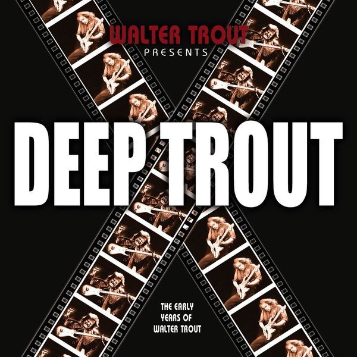

Artist...............: Walter Trout Album................: Deep Trout Genre................: Blues Source...............: WEBQ Year.................: 2005 Ripper...............: & Codec................: Free Lossless Audio Codec (FLAC) Version..............: reference libFLAC 1.4.2 20221022 Quality..............: Lossless, (avg. compression: 63 %) Channels.............: Stereo / 44100 HZ / 16 Bit Tags.................: - Information..........: Provogue Tracklist: 1. Walter Trout - Put It Right Back 2. Walter Trout - The Love That We Once Knew 3. Walter Trout - How Much Do You Want 4. Walter Trout - Sweet As A Flower 5. Walter Trout - Victor The Cajun 6. Walter Trout - Kill The Monkey 7. Walter Trout - Earrings On The Table 8. Walter Trout - Fast Moving Traffic 9. Walter Trout - Love In Vain 10. Walter Trout - Motivation Of Love 11. Walter Trout - If You Just Try 12. Walter Trout - Tribute To Muddy Waters 13. Walter Trout - Life In The Jungle (Acoustic) 14. Walter Trout - Big Chain 15. Walter Trout - So Sad To Be Lonely 16. Walter Trout - Walter Trout Interview (Bonus Track) Playing Time.........: 02:13:46 Total Size...........: 744,39 MB